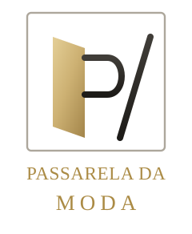

Passarela da Moda
O sistema inteiro da sua loja em um único arquivo. Abre com dois cliques, funciona sem internet e salva tudo no seu computador.
offline
sem login
sem cadastro
1 arquivo
Baixar o programa (.html)
- Baixe o arquivo
Passarela-da-Moda.html— ele vai para a pasta Downloads. - Dê dois cliques no arquivo. Abre no Chrome ou Edge, direto no painel (não pede senha).
- Clique em “Gravar dados no computador” e escolha a pasta/arquivo onde quer guardar. A partir daí tudo é salvo sozinho: produtos, fotos, vendas, clientes, financeiro e caixas.
- Para usar em outro computador, leve esse arquivo
.json— ou use Backup / Restaurar dentro do sistema.
Dica: se o navegador avisar que “este tipo de arquivo pode ser perigoso”, clique em Manter. Ele é perigoso só de nome: é o seu sistema, sem nenhuma conexão com a internet.